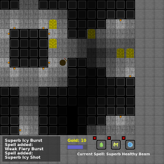

Sereldic

Gallery
This is going to be a semi-rogue-like-dungeon-crawler (SRLDC - From here comes the game's title).
At the moment it has:
- Mage class
- Movement
- Ability to cast spells
- Random spell system
- An attack animation
- Random Generation
- A scrolling text box
- A room editor
- Gold
- And a lot more coming!
Public Todo List
Thu. Aug. 04-Mana bar, Health bar, and updated trapdoor system. New picture added to gallery.
Current Version-- 0.4.6
Mon. Aug. 01-Trapdoors! They take you to another dungeon level, appearance in a level isn't certain.
Current Version-- 0.4.2
Sun. Jul 31-Current spell indicator, with mouse wheel support. Coin images are better, and randomized.
Current Version-- 0.4.0
Expanded History